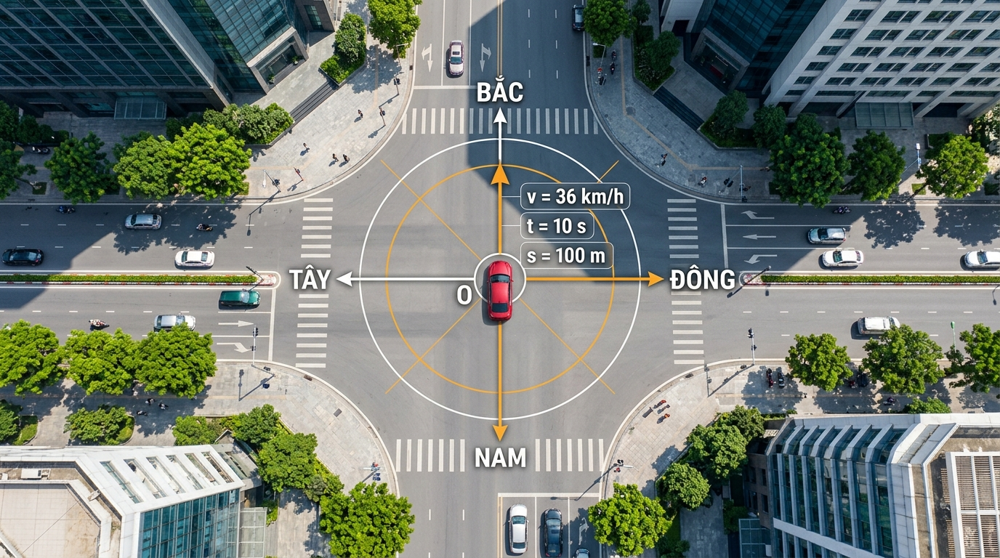
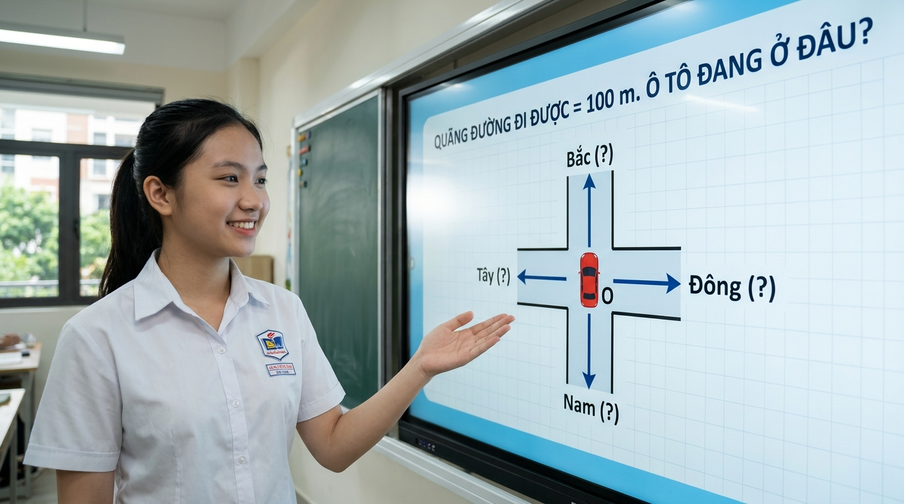
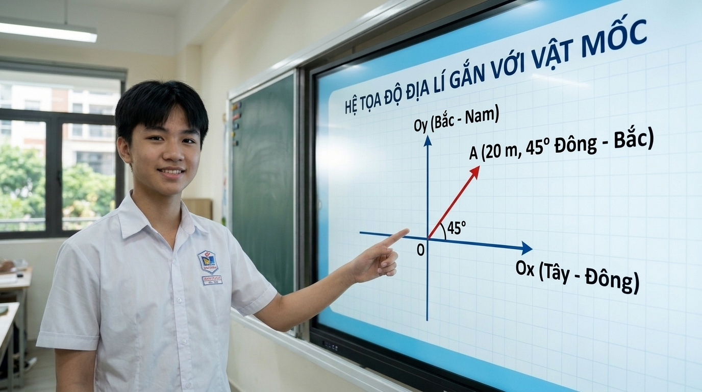
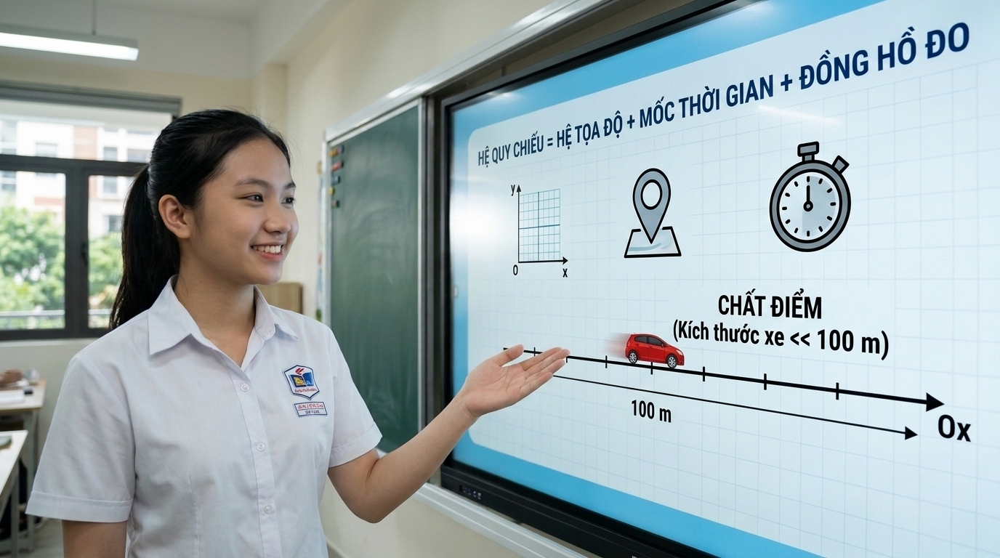
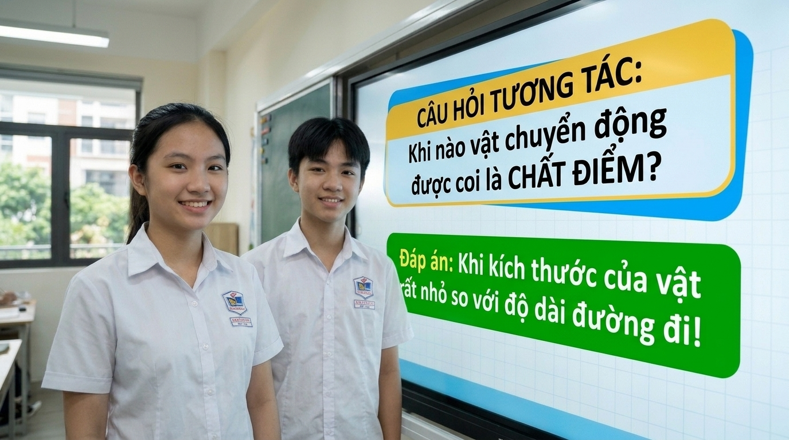

🎬 BỘ KIT PHƯƠNG ÁN 2: TẠO VIDEO AI CHUYỂN ĐỘNG NGƯỜI THẬT (#GoogleFlow #Kling #Dreamina)
Bài 4 (Phần 1): Vị trí của vật & Hệ quy chiếu — Nhóm: Anh Thư, Hữu Trọng, Thế Mỹ
⚡ Quy trình 3 bước làm nhân vật cử động tay & nhép môi y hệt clip mẫu trên Facebook:
Mở Google Flow (Veo) tại labs.google/fx/vi/tools/flow (chọn chế độ Frames to Video / Image to Video) hoặc Kling AI / Dreamina CapCut.
Tải tấm ảnh gốc (Canh1..Canh5.jpg trong thư mục Huong2_Kit_Video1) lên làm khung hình đầu (First Frame / Keyframe).
Bấm nút "Copy Prompt" bên dưới tương ứng với từng cảnh và dán vào ô mô tả chuyển động → Xuất ra 5 đoạn clip 8 giây → Ghép với file âm thanh Full_Audio_Video1_CoNhacNen.mp3 trên CapCut/Canva!
CẢNH 1 (0:00 - 0:12) • Giọng: Anh Thư

1. Prompt Image-to-Video (Giữ nguyên chữ & sơ đồ, cho ô tô chạy qua ngã tư):
Aerial top-down view of a modern 4-way city intersection. Keep all infographic text labels (BẮC, NAM, ĐÔNG, TÂY, O, v = 36 km/h, t = 10 s, s = 100 m) and compass lines completely sharp, static, and unchanged. The red car in the center smoothly accelerates forward along the road while other city cars move gently in the background. Subtle cinematic drone hover, 4k educational physics visualization.
Lời thoại khớp cảnh (12.5 giây):
"Chào thầy cô và các bạn! Hãy cùng nhóm mình bắt đầu bằng một tình huống thực tế nhé: Một chiếc ô tô đi qua ngã tư O với tốc độ 36 km/h. Sau 10 giây, xe đi được quãng đường 100 mét."
CẢNH 2 (0:12 - 0:25) • Giọng: Anh Thư

2. Prompt Image-to-Video (Học sinh nữ cử động tay chỉ bảng & nói tự nhiên, khóa cố định chữ trên bảng):
Static tripod camera in a bright classroom. Keep the digital smartboard screen, all Vietnamese text ("QUÃNG ĐƯỜNG ĐI ĐƯỢC = 100 m. Ô TÔ ĐANG Ở ĐÂU?"), and the 4-way intersection diagram completely static, sharp, and unchanged. The Vietnamese female high school student speaks naturally with friendly facial expressions, nodding slightly and gesturing smoothly with her right hand toward the intersection diagram on the smartboard as she explains the physics question. Realistic natural human motion.
Lời thoại khớp cảnh (13.1 giây):
"Câu hỏi đặt ra là: Liệu chỉ biết quãng đường 100 mét, chúng mình có thể xác định chính xác xe đang ở đâu trên bản đồ không? Chắc chắn là chưa thể rồi, vì ta chưa biết xe đi về hướng Đông, Tây, Nam hay Bắc!"
CẢNH 3 (0:25 - 0:41) • Giọng: Hữu Trọng

3. Prompt Image-to-Video (Học sinh nam chỉ tay vào hệ trục tọa độ Oxy trên bảng thông minh):
Static tripod camera shot in a classroom. Keep the digital smartboard screen, the Vietnamese title ("HỆ TỌA ĐỘ ĐỊA LÍ GẮN VỚI VẬT MỐC"), the Ox and Oy axes, and the red vector arrow A completely locked, sharp, and unchanged. The Vietnamese male high school student speaks engagingly to the class, pointing his hand toward origin O and then moving his hand along the red vector arrow toward point A (20 m, 45° Đông - Bắc) while smiling warmly. Realistic natural presenter movement.
Lời thoại khớp cảnh (16.2 giây):
"Để biết chính xác vị trí, chúng ta cần một hệ tọa độ gắn với vật mốc. Trong đời sống, các bạn thường thấy hệ tọa độ địa lí với trục Ox theo hướng Tây – Đông và trục Oy theo hướng Bắc – Nam. Ví dụ điểm A cách O 20 mét theo hướng 45 độ Đông – Bắc."
CẢNH 4 (0:41 - 1:01) • Giọng: Anh Thư

4. Prompt Image-to-Video (Học sinh nữ giảng công thức Hệ quy chiếu & Chất điểm):
Static medium shot in a classroom. Keep all text and graphics on the smartboard ("HỆ QUY CHIẾU = HỆ TỌA ĐỘ + MỐC THỜI GIAN + ĐỒNG HỒ ĐO", the icons, and the Ox axis with "CHẤT ĐIỂM") completely fixed, crisp, and unaltered. The Vietnamese female student speaks clearly and confidently, gesturing with her open hand toward the formula and the small red car on the Ox axis while looking between the board and the camera.
Lời thoại khớp cảnh (19.2 giây):
"Khi chúng mình kết hợp hệ tọa độ này cùng với mốc thời gian và một chiếc đồng hồ bấm giờ, ta sẽ có một hệ quy chiếu hoàn chỉnh. Nếu xe chỉ chạy thẳng trên một đường, ta chỉ cần chọn một trục Ox trùng với đường đi. Và khi kích thước xe rất nhỏ so với quãng đường 100 mét, tụi mình hoàn toàn có thể coi nó là một chất điểm!"
CẢNH 5 (1:01 - 1:14) • Giọng: Thế Mỹ & Nhóm 1

5. Prompt Image-to-Video (Cả hai học sinh tương tác & chào kết thúc bài thuyết trình):
Static medium shot in a classroom. Keep the smartboard text ("CÂU HỎI TƯƠNG TÁC: Khi nào vật chuyển động được coi là CHẤT ĐIỂM?" and the green answer box) completely sharp and unchanged. Both Vietnamese high school students smile warmly at the camera, nodding and speaking cheerfully, then wave their hands slightly at the end to thank the teacher and classmates. Natural friendly classroom presentation.
Lời thoại khớp cảnh (12.5 giây):
"Câu hỏi tương tác dành cho cả lớp: Khi nào độ dài quãng đường cho phép coi vật là chất điểm? Đó là khi kích thước của vật rất nhỏ so với độ dài đường đi! Cảm ơn thầy cô và các bạn đã lắng nghe!"